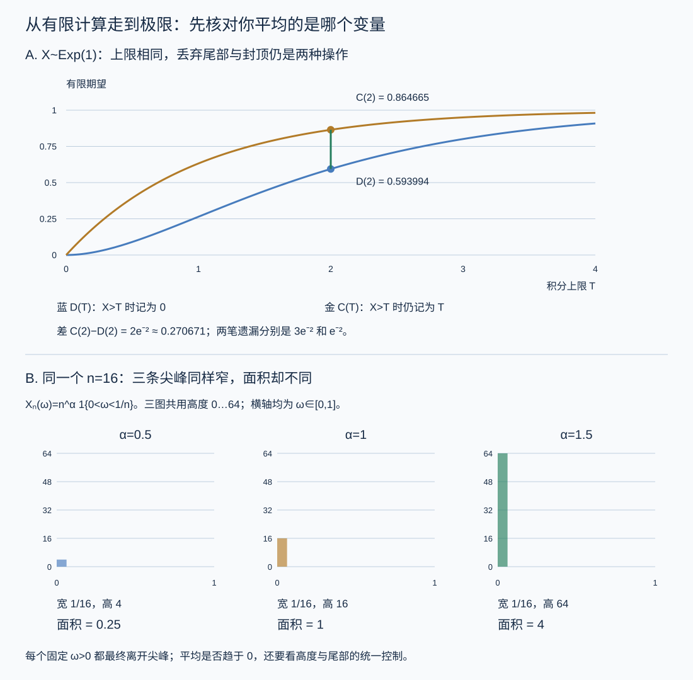

本页目录
测度概率 I · 测度论语言与期望
从“平均值算得出来”走到“极限与平均可以交换”，需要额外条件。本页把分布、正负部、截断、一致可积和事件的无穷次发生连起来。
先修：测度与可测集、Lebesgue 积分、收敛方式。后续：独立性与大数定律、条件期望与鞅。
学习层：每一步都有有限平均，为什么极限仍可能没有期望？
1. 从一张账单开始：先确定平均的对象
设想一个随机损失 \(X\)。单次结果可能很大，但发生概率很小。计算器只能列出有限个结果，或把积分算到有限上限；研究问题却关心整个分布。需要区分三个问题：
- 写下的概率模型是否完整、归一化？
- 这个随机变量的期望是有限数、扩展值，还是未定义？
- 当模型或截断范围改变时，能否把极限移进期望？
概率空间 \((\Omega,\mathcal F,P)\) 给出结果、可测事件与概率，且 \(P(\Omega)=1\)。实值随机变量是可测映射 \(X:\Omega\to\mathbb R\)；可测性保证 \(\{X\le t\}\) 等事件有概率。它的分布是实数轴上的推前测度
对非负可测 \(g\)，或满足 \(\mathbb E|g(X)|<\infty\) 的 \(g\)，
这个换元公式先对指标函数成立，再对非负简单函数成立，最后由单调逼近推广；可积变号函数拆成正负部处理。它让只依赖 \(X\) 分布的计算离开原来的样本空间，但没有保留 \(X\) 与其他变量的联合关系。
2. 期望有三种结果，不能一律塞进一个数值框
非负可测 \(X\) 的积分定义为下方非负简单函数积分的上确界，允许 \(+\infty\)。变号变量先写成
| 正部期望 | 负部期望 | \(\mathbb EX\) |
|---|---|---|
| 有限 | 有限 | 两者相减，有限；此时 \(X\in L^1\) |
| \(+\infty\) | 有限 | \(+\infty\) |
| 有限 | \(+\infty\) | \(-\infty\) |
| \(+\infty\) | \(+\infty\) | 未定义，禁止把 \(\infty-\infty\) 当成数 |
这里说“期望存在”时必须说明是否允许扩展值；本页用“可积”专指 \(\mathbb E|X|<\infty\)。代数规则也受这个边界约束，例如两个扩展期望相加时不能产生 \(\infty-\infty\)。
若分布集中在可数个点 \(x_k\)，则 \(\mathbb EX=\sum_k x_kp_k\)；若分布相对于 Lebesgue 测度有密度 \(f\)，则 \(\mathbb EX=\int xf(x)\,dx\)，两式均须按以上正负部规则解释。有些分布既不是纯原子，也没有密度；例如混合分布有原子和连续部分，Cantor 分布则是奇异连续的。统一对象始终是 \(\int x\,d\mu_X(x)\)，并非每个变量都同时有“原子公式”和“密度公式”。
3. 尾积分为何等于非负期望？
固定一个非负数 \(x\)，从高度 \(0\) 数到高度 \(x\)：
因此，对非负 \(X\)，
交换次序用的是 Tonelli 定理：在这里的概率空间与 Lebesgue 测度构成的 \(\sigma\) 有限乘积空间上，被积函数可测且非负，共同积分可以无限大。它不需要密度。对变号函数用 Fubini 的常用充分条件是绝对可积；不能把非负情形的许可用于任意交错项。
对 \(X\sim\operatorname{Exp}(1)\)，无限的密度账与尾账都为 1；但有限上限 \(T\) 时，它们是不同的随机变量：
二者相差 \(Te^{-T}\)。被丢掉的 \(X>T\) 样本，在第一种截断中贡献 0，在第二种截断中仍贡献 \(T\)。因此密度账遗漏 \((1+T)e^{-T}\)，尾账遗漏 \(e^{-T}\)；不能用同一个“遗漏尾部”数字替代两者。
在 \(T=2\) 时，\(D(2)\approx0.593994\)、\(C(2)\approx0.864665\)，相差约 \(0.270671\)。同样的数值 1，也不意味着分布相同：实验中有限原子分布与指数分布都具有期望 1，但一个有原子，一个没有。
4. 非负截断与变号部分和：两个不同的极限问题
单调收敛定理（MCT）：若 \(0\le X_n\uparrow X\) 几乎处处，则 \(\mathbb EX_n\uparrow\mathbb EX\)，允许极限为 \(+\infty\)。对任意非负 \(X\)，\(X\wedge K\uparrow X\) 就是一种合法逼近。Fatou 对一般非负序列只保证
没有单调性或其他控制时，不能自动改成等号。DCT 则要求几乎处处收敛，并由同一个可积变量控制绝对值。
取 \(P(J=k)=c/k^2\)，\(k\ge1\)，其中 \(c=6/\pi^2\)。若 \(X=J^2\)，每个结果对期望的贡献都是 \(c\)，所以 \(\mathbb EX=+\infty\)。令 \(m=\lfloor\sqrt K\rfloor\)，有限截断仍能精确拆账：
第一项是已经低于上限的结果，第二项把其余概率质量放在高度 \(K\)。当 \(K\to\infty\) 时，仅第一项就发散。这是证明；有限范围内上升的曲线只是它的示意。
现在改成 \(Y=(-1)^J J\)。偶数给正部，奇数给负部：
因此 \(\mathbb EY\) 未定义。但每个有限索引截断 \(Y_N=Y\mathbf1_{\{J\le N\}}\) 都可积，且
有限部分和可以相减；不合法的是把这个指定排列下的级数极限认作原变量的 Lebesgue 期望。正负两部各自发散，所以改变排列会改变条件收敛级数的结果。这里的索引截断 \(J\le N\) 也不同于对数值 \(Y\) 做上下裁剪。
5. 一致可积：防止平均值藏在越来越少的巨大结果里
在 \((0,1)\) 上取均匀概率，令
对每个 \(\omega>0\)，当 \(n\) 足够大时它不再落入 \((0,1/n)\)，所以四种情形都逐点趋于 0。但
当 \(\alpha<1\)，平均趋于 0；当 \(\alpha=1\)，平均恒为 1；当 \(\alpha>1\)，平均反而发散。图的宽度趋于零并不足以判断面积。
一个可积随机变量族 \(\{Z_i\}\) 称为一致可积，如果
顺序是先对整个族取上确界，再让阈值增大。每个固定 \(i\) 的尾部都会消失，不能代替对所有 \(i\) 使用同一个阈值。有限截取的 \(Z_1,\ldots,Z_N\) 总是一致可积；看有限族的尾部图不能证明无限族的 UI。
对刚才的尖峰族，\(\alpha=1\) 时任意 \(n>M\) 的尾部期望仍是 1，故不 UI。\(\alpha=\tfrac12\) 时，超过高度 \(M\) 要求 \(n>M^2\)，而其面积 \(n^{-1/2}\) 随 \(n\) 下降；因此整个无限族的尾部上确界趋于零。\(\alpha=0\) 的高度被 1 控制，也 UI；\(\alpha=\tfrac32\) 的尾部上确界对任意有限 \(M\) 都是 \(+\infty\)。
一个常用充分条件是存在 \(\delta>0\) 使 \(\sup_i\mathbb E|Z_i|^{1+\delta}\le C<\infty\)，因为
被同一个可积变量控制也是充分条件。这些是验证方法，不是必要条件；某个高阶矩判据失败并不能单独证明“不 UI”。

6. Vitali 定理：把尾部条件变成合法换极限
设每个 \(X_n\in L^1\)，且 \(X_n\to X\) 依概率，\(X\) 是同一概率空间上的实值随机变量。则
从右推左时，\(X\in L^1\) 本身也是结论。下面给出完整的连接步骤。
UI 先给出 \(\sup_n\mathbb E|X_n|<\infty\)：选一个阈值使所有尾部期望小于 1，阈值以下的贡献至多就是该阈值。依概率收敛可取几乎处处收敛子列；沿此子列用 Fatou，得到 \(\mathbb E|X|<\infty\)。
再令 \(c_M(x)=\max(-M,\min(x,M))\)。利用三角不等式，
第一项由 UI 一致变小，第三项由 \(X\in L^1\) 变小。固定 \(M\) 后，中间差 \(D_n=|c_M(X_n)-c_M(X)|\) 依概率趋于零且不超过 \(2M\)，于是对任意 \(\varepsilon>0\)，
先让 \(n\to\infty\)，再让 \(\varepsilon\downarrow0\)，得到固定 \(M\) 的中间项趋零；最后放大 \(M\)，便得 \(L^1\) 收敛。这里使用了“有界且依概率收敛”的估计，没有把依概率收敛直接塞进要求几乎处处收敛的 DCT。
反向设 \(\mathbb E|X_n-X|\to0\)。逐点分类可得
先让所有足够大的 \(n\) 的第一项期望很小，再用 \(X\) 的可积性控制第二项。剩下有限多个早期 \(X_n\) 各自可积，可以同时选一个更大的 \(M\) 控制它们的尾部；这就证明了 UI。
由 \(L^1\) 收敛还得 \(|\mathbb EX_n-\mathbb EX|\le\mathbb E|X_n-X|\to0\)。只知道有符号平均值相等或趋同，仍不足以反推 \(L^1\) 收敛，因为正负误差可能抵消。
7. 操作实验：分别查看有限数值与无限结论
先回答三个问题：非负尾积分是否需要密度？MCT 是否允许无限期望？有限有符号部分和收敛能否证明原期望存在？
无 JavaScript 后备。 有限原子取 \(P(X=0,1,2,4)=(1/2,1/4,1/8,1/8)\)，概率和为 1，期望为 1。指数模型在 \(T=2\) 时，密度有限积分为 \(1-3e^{-2}\)，尾有限积分为 \(1-e^{-2}\)；各自补回 \(3e^{-2}\) 和 \(e^{-2}\) 才都得到 1。求积还另有离散化误差。
对 \(P(J=k)=c/k^2\)，取 \(K=4\) 时，\(m=2\)，故 \(\mathbb E[J^2\wedge4]=2c+4(1-5c/4)=4-3c\approx2.176219\)。 取有符号索引截断 \(N=4\) 时，正部部分和为 \(3c/4\)，负部部分和为 \(4c/3\)，有限差为 \(-7c/12\approx-0.354624\)；原变量的两部期望仍都无限。
尖峰族 \(X_n=n^\alpha\mathbf1_{(0,1/n)}\) 在 \(n=16\) 时，\(\alpha=1/2,1,3/2\) 的平均分别为 \(1/4,1,4\)。固定阈值 \(M=4\)：\(\alpha=1/2\) 的无限族尾部上确界为 \(1/\sqrt{17}\)，\(\alpha=1\) 为 1，\(\alpha=3/2\) 为 \(+\infty\)；这三个数来自整个族的解析分析，不来自只画到 16 的曲线。
实验中，密度积分与尾积分的解析值、数值求积、遗漏尾部要逐项对照。对有符号重尾，有限索引部分和单独列出，原期望仍标作未定义。尖峰族同时显示有限个 \(n\) 的尾部最大值和整个无限族的结论，防止把有限样本的平静误认为统一控制。
8. π–λ 定理：为什么检查一小类事件就够？
要证明两个概率分布相同，不可能枚举全部 Borel 集。先在一个能够生成它们的小集合族上核对，再证明等式能够传播。
π 系 \(\mathcal P\) 对有限两两交封闭；λ 系 \(\mathcal L\) 含 \(\Omega\)，对补集和可数个两两不交集合的并封闭。后一条件等价于“对嵌套集合之差与单调上升并封闭”。π–λ 定理说：若 \(\mathcal P\subset\mathcal L\)，则 \(\sigma(\mathcal P)\subset\mathcal L\)。
证明的关键是让最小 λ 系恢复交运算。记含 \(\mathcal P\) 的最小 λ 系为 \(\mathcal D\)，必要时先把 \(\Omega\) 加入 \(\mathcal P\)。固定 \(A\in\mathcal P\)，集合族
是 λ 系：全集条件用 \(A\in\mathcal D\)，补集条件用 \(A\setminus(A\cap B)\)，不交并条件用交对并的分配。因为 \(\mathcal P\) 对交封闭，\(\mathcal D_A\) 含 \(\mathcal P\)，故它包含 \(\mathcal D\)。这先证明“一个因子在 \(\mathcal P\)、另一个在 \(\mathcal D\)”时交仍在 \(\mathcal D\)。再固定任意 \(B\in\mathcal D\)，对另一个因子重复同样论证，得到 \(\mathcal D\) 本身对交封闭。
λ 系加交封闭就有有限并与差；把任意可数并逐项去掉已出现的部分，可化为不交并。因此 \(\mathcal D\) 是 σ 代数，包含 \(\sigma(\mathcal P)\)。任何含 \(\mathcal P\) 的 λ 系都包含 \(\mathcal D\)，定理成立。
若两个概率测度 \(P,Q\) 在 \(\mathcal P\) 上相等，则 \(\mathcal L=\{B:P(B)=Q(B)\}\) 是 λ 系：补集用总质量同为 1，不交并用可数可加性。因此它们在 \(\sigma(\mathcal P)\) 上相等。相同的分布函数由此决定相同分布；相同的几个矩或仅相同期望则不够。
9. Borel–Cantelli：从有限概率和走到“无穷次”
事件 \(A_n\) 无穷多次发生，记作
这表示无论把起点推到多晚，后面仍至少发生一次。
BC-I：若 \(\sum_nP(A_n)<\infty\)，则 \(P(A_n\ {\rm i.o.})=0\)。因为对每个 \(N\)，
这里完全不需要独立性。要由它证明 \(X_n\to X\) 几乎处处，应对每个正整数 \(m\) 检查 \(\sum_nP(|X_n-X|>1/m)<\infty\)，再取可数个概率 1 事件的交；只检验一个固定误差阈值不够。
BC-II（独立版本）：若事件相互独立且 \(\sum_nP(A_n)=\infty\)，则 \(P(A_n\ {\rm i.o.})=1\)。固定起点 \(N\)，
所以从每个起点往后至少发生一次的概率为 1，再取可数交即可。这里用相互独立得到乘积；结论还存在较弱的独立性版本，但不能在这段乘积证明中直接删掉条件。
反例是同一个 \(U\sim\operatorname{Unif}(0,1)\) 定义 \(A_n=\{U<1/n\}\)：概率和发散，却对每个 \(U>0\) 只发生有限次。依赖结构改变了无穷次发生的结论。
9a. 高斯序列的上极限：把两个引理各用一次
令 \(G_n\) 为相互独立的标准正态变量。对固定 \(\varepsilon>0\)，由高斯尾界 \(P(G_n>x)\le e^{-x^2/2}\) 得
这个尾界可由 \(\mathbb E e^{tG_n}=e^{t^2/2}\) 出发，对 \(e^{tG_n}\) 用 Markov 不等式并取 \(t=x\) 得到。右侧可求和，BC-I 说明这些越界仅发生有限次。对可数个 \(\varepsilon\downarrow0\) 同时成立，故 \(\limsup G_n/\sqrt{2\log n}\le1\) 几乎处处。
反向需要尾部下界与独立性。记标准正态密度为 \(\varphi\)；当 \(x\ge1\)，仅积分区间 \([x,x+1/x]\) 就有
取 \(x=(1-\varepsilon)\sqrt{2\log n}\)，\(0<\varepsilon<1\)，概率因此至少为正常数乘 \(n^{-(1-\varepsilon)^2}/\sqrt{\log n}\)。这个级数发散：分母中的 \(\sqrt{\log n}\) 最终小于任意固定正幂 \(n^\delta\)，可选 \(\delta\) 使总幂仍小于 1。BC-II 说明这种越界发生无穷次。再对可数个 \(\varepsilon\downarrow0\) 取交，得到
这给后续高维概率中的高斯极值尺度一个具体来源。上界证明不需要不同 \(n\) 的独立性，下界的这段证明需要；边缘分布相同还不足以复制全部结论。
10. 三个迁移练习
题 A：同样在“扔掉尾部”，差别在哪里？ 对任意非负 \(X\)，证明 \(\mathbb E[X\wedge T]=\mathbb E[X\mathbf1_{\{X\le T\}}]+T P(X>T)\)。 再用指数模型 \(T=2\) 核对两笔遗漏尾部。是否需要假设 \(\mathbb EX<\infty\)？
先完成题 A，再核对
逐点恒等式 \(X\wedge T=X\mathbf1_{\{X\le T\}}+T\mathbf1_{\{X>T\}}\) 直接给出等式，包括 \(X=T\) 的边界。两边不超过 \(T\)，不需要原期望有限。指数模型的两个有限值为 \(1-3e^{-2}\) 与 \(1-e^{-2}\)，差为 \(2e^{-2}\)；对应遗漏分别是 \(3e^{-2}\) 与 \(e^{-2}\)。有限积分的差别不是求积误差，而是随机变量已经改变。
题 B：平均值都为零，是否就能通过 Vitali？ 令 \(U\) 均匀分布在 \((0,1)\)，\(S\) 为独立的等概率正负号，取 \(Z_n=S n\mathbf1_{\{U<1/n\}}\)。 计算 \(\mathbb EZ_n\)、\(\mathbb E|Z_n|\) 和 UI 尾部，判断收敛方式。
先完成题 B，再核对
每个固定 \(U>0\) 最终都会离开缩小区间，因此 \(Z_n\to0\) 几乎处处，也依概率。由独立且 \(\mathbb ES=0\) 得 \(\mathbb EZ_n=0\)，但 \(\mathbb E|Z_n|=n(1/n)=1\)，所以不在 \(L^1\) 中趋于零。对任意有限 \(M\)，只要 \(n>M\)，尾部期望就是 1，故该族不 UI。Vitali 要控制绝对误差；有符号期望的抵消不能替代它。
题 C：边缘概率相同，路径结论也相同吗？ 比较上述嵌套事件 \(A_n=\{U<1/n\}\) 与独立均匀变量 \(U_n\) 定义的 \(B_n=\{U_n<1/n\}\)。它们每项概率都为 \(1/n\)；分别求无穷次发生的概率。
先完成题 C，再核对
嵌套模型中，每个固定 \(U>0\) 都存在 \(n>1/U\)，此后事件永远不再发生，所以概率为 0。独立模型中 \(\sum1/n\) 发散，BC-II 给概率 1。对 \(N\ge2\) 的有限窗口，还有可复算的差别：
让 \(M\to\infty\) 后再让 \(N\to\infty\)，分别得到 0 与 1。有限窗口也能显示依赖的影响，但无穷次结论仍依靠这两个极限，而不是有限次数的随机演示。
11. 连接后续课程
依概率收敛能抽出几乎处处收敛子列，\(L^p\) 收敛（\(p\ge1\)）蕴含依概率收敛，几乎处处收敛也蕴含依概率收敛；这些方向并不意味着全部等价。高度为 \(n\)、宽度为 \(1/n\) 的尖峰给出“几乎处处收敛但不 \(L^1\) 收敛”。反方向可用打字机序列：在 \((0,1)\) 上依次扫描每个二进小区间的指标函数，逐层区间宽度为 \(2^{-m}\)，所以 \(L^1\) 范数趋零；但每个点在每一层都被扫到一次，也在该层其余区间取零，因此不逐点收敛。
条件期望与鞅会反复使用 π–λ 来传播事件等式，用 UI 保证极限不丢掉平均质量，用 Borel–Cantelli 把可求和的失败概率变成几乎处处保证。后续可按 Durrett 第五版目录及作者讲义 阅读 §2.1、§2.3、§4.6；UI 的定义和收敛方式也可对照 Neufeld 的简明笔记。
速查：先看条件，再选工具
| 问题 | 可用工具 | 必须保留的条件 |
|---|---|---|
| 非负截断换极限 | MCT | 非负、可测、几乎处处单调上升；允许无限 |
| 非负二重积分换序 | Tonelli | 本页使用 \(\sigma\) 有限乘积空间；允许无限 |
| 变号积分换序 | Fubini | 绝对可积是常用充分条件 |
| 依概率收敛换 \(L^1\) | Vitali | 各项可积，加上整个序列 UI |
| 生成元上的等式推广 | π–λ | 生成元是 π 系，满足等式的族是 λ 系 |
| 失败只发生有限次 | BC-I | 概率可求和，无需独立 |
| 事件无穷次发生 | BC-II | 本页乘积证明使用相互独立与概率和发散 |